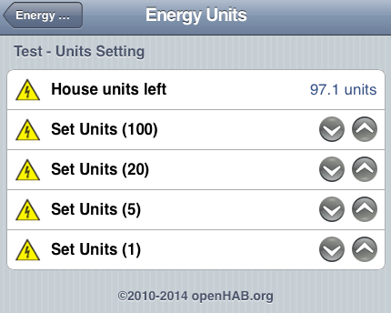

Hi,
Im not sure if this is the place or feature requests but here goes anyway:
Is it possible for the Event module to add MQTT to the list of supported actions. There is an MQTT module as well for getting data into emoncms, but in this case want to use the event module for getting feed data out of emoncms. but the MQTT php files in the MQTT module can be used as starting point for getting the Event module to send MQTT messages.
For someone who knows what they are doing in PHP [and their way around emoncms] this should be so so simple!
Thanks in advance
Jason
Re: Feature Request: Emoncms Event Module - support for MQTT
Are you wanting this feature to transfer feed data from emoncms to node-red?
Paul
Re: Feature Request: Emoncms Event Module - support for MQTT
Hi Paul,
I use MQTT as the foundation of my home network where all sensors, and consumers interface to. I use openhab for my home automation sensors and control items. I now use emoncms for my energy items [ as I did the energy analytics before in openhab but didnt want re-invent what has been done in emoncms] and want access to the feeds in emoncms from openhab and distributed arduino sensors with lcds [like emonglcd but it will get its feed data from emoncms]
Heres my architecture:
Thanks
Jason
Re: Feature Request: Emoncms Event Module - support for MQTT
I know that MQTT is on the radar for future OEM development, and will be a welcome addition.
I asked if you were using node-red, because I have just started using a flow to poll data from emoncms, and process it in node-red (courtesy of Martin Harizanov) which seems to work well, and enables me to not only monitor diverted solar power to my immersion heater, but with the intention of switching on the gas boiler depending upon water temperature & weather forecasts etc.
Anyway the node-red flow is pasted below if anyone wants it.
Paul
[{"id":"49fd813c.b6028","type":"function","name":"Prepare emonCMS URL","func":"var API=\"emoncms read only API key\";\nvar feedID=15;\n\nvar URL=\"http://yoururl/emoncms/feed/value.json?apikey=\" + API + \"&id=\" + feedID\n\nmsg.url=URL;\n\nreturn msg;","outputs":1,"x":275,"y":390,"z":"7fc7e6a6.803818","wires":[["781ffd8f.87e004"]]},{"id":"781ffd8f.87e004","type":"http request","name":"HTTP request","method":"GET","url":"","x":486,"y":390,"z":"7fc7e6a6.803818","wires":[["bfa7dec1.40582"]]},{"id":"3160b88d.ce9f48","type":"inject","name":"@21:00","topic":"","payload":"","payloadType":"none","repeat":"","crontab":"00 21 * * *","once":false,"x":91,"y":390,"z":"7fc7e6a6.803818","wires":[["49fd813c.b6028"]]},{"id":"76de90dd.89217","type":"pushover","title":"Hot Water Warning","name":"","priority":0,"x":704,"y":434,"z":"7fc7e6a6.803818","wires":[]},{"id":"a9e222c0.561de","type":"switch","name":"Alert if less than 3kw","property":"payload","rules":[{"t":"lt","v":3,"v2":0}],"checkall":"true","outputs":1,"x":261,"y":434,"z":"7fc7e6a6.803818","wires":[["2dc69278.d2396e"]]},{"id":"2dc69278.d2396e","type":"function","name":"Prepare Push Message","func":"var diverted = msg.payload;\n\ndiverted = Math.round(diverted * 100) / 100\n\nmsg.payload = (\"Only \" + diverted + \"kw was diverted to the immersion heater today. Time to switch on the gas boiler!\");\nreturn msg;","outputs":1,"x":486,"y":434,"z":"7fc7e6a6.803818","wires":[["76de90dd.89217"]]},{"id":"7164a6d2.8e9b58","type":"debug","name":"","active":true,"console":"false","complete":"false","x":795,"y":390,"z":"7fc7e6a6.803818","wires":[]},{"id":"bfa7dec1.40582","type":"json","name":"","x":638,"y":390,"z":"7fc7e6a6.803818","wires":[["a9e222c0.561de","7164a6d2.8e9b58"]]}]
Re: Feature Request: Emoncms Event Module - support for MQTT
I too would be very interested in this. I use the event module to tweet me when I get over 15kWh generation in a day but ideally I would like it to publish an MQTT topic so that my home automation monitoring script, mqttwarn, can handle it and send out Pushover notifications, tweets etc.
But then nubbles has prompted some further thoughts and I agree it would be great to be able to pull out calculated feed data from emoncms.
I have zero php experience so hopefully someone out there can knock this up without too much trouble?
Re: Feature Request: Emoncms Event Module - support for MQTT
Publishing feed data to MQTT would be a natural progression for emoncms and a further step towards IoT.
Gets my vote.
Paul
Re: Feature Request: Emoncms Event Module - support for MQTT
Also think this is a good idea. What would be a good form for the MQTT topic for feed data? It is a matter of having a single topic say called 'feeds' and publishing a json into it when any feed is updated, something like:
MQTT topic: feeds
{"id":1, "time":UNIXTIMESTAMP, "value":250.2}
{"id":2, "time":UNIXTIMESTAMP, "value":25.2}
{"id":3, "time":UNIXTIMESTAMP, "value":120}
It could be added to the feed_model in the set_timevalue function with a similar check to if ($this->redis) { in order to check if mqtt is available..
Is there a better way to do this?
Re: Feature Request: Emoncms Event Module - support for MQTT
I think ideally it would be a configurable base topic, and then EmonCMS would create subtopics using the feed id;
E.g. set base topic to 'home/energy/emoncms/feeds', then assuming I had two feeds I would get values published to;
home/energy/emoncms/feeds/1 250.2
home/energy/emoncms/feeds/2 25.2
And if you wanted the timestamps published then maybe dump them in a subtopic;
home/energy/emoncms/feeds/1/timestamp UNIXTIMESTAMP
home/energy/emoncms/feeds/2/timestamp UNIXTIMESTAMP
That way we can publish raw values, instead of JSON, making it easier for subscribing clients to handle. The timestamp subtopic would in effect just be a 'last updated' field.
Re: Feature Request: Emoncms Event Module - support for MQTT
I think Ben's suggested format would be the easiest to integrate, and if the 'configurable base topic' proves extra work, then it could be a preset such as;
emoncms/feed/3
Also, is there any need for the timestamp to be included?
Paul
Re: Feature Request: Emoncms Event Module - support for MQTT
# Also, is there any need for the timestamp to be included?
I don't think so no, I believe it is the subscribing clients task to monitor the dttms of events if required.
Re: Feature Request: Emoncms Event Module - support for MQTT
I don't think that the time stamp will add much value unless someone has an application that uses sequence of events. In my case it's to integrate to my home automation system which in my case doesn't need timestamped data.
I have been busy in the event module and have a emoncms build running that includes a mqtt action that published on a defined event trigger. The topic and payload is configurable as suggested by Ben above.
I have used the phpmqtt lib from blue rhino instead of SAM as SAM is no longer supported. I've added additional columns to event and event settings tables for the mqtt settings and per event items for mqtt.
I however need some expert help about now with managing the mqtt connection and variable scope within the event code. As it is currently a connection is setup and established for each publish of an mqtt and then closed immediately afterwards. So while it works, it's unnecessary overhead. So my question is: does the event class in eventmodel.php get instantiated many times or just once? I can't figure out the calling sequence in emoncms.
I will post some screenshots and other details later on.
Jason
Re: Feature Request: Emoncms Event Module - support for MQTT
If im not mistaken, the event module only runs once per update, since its all php code, meaning the server is called, runs the code, then terminates.
So each time a feed is updated, then the event module is called, so its not a 'persistent' model.
I believe you will need JavaScript running on a browser page to get 'persistence'.
I might be dead wrong here, so anybody that knows better please correct me.
I have been working on event module too, maybe we should share some code Jason :D
Re: Feature Request: Emoncms Event Module - support for MQTT
I know that the Paho MQTT client has a 'send single message' API - which creates a connection, sends the message, and tears it down. I am not suggesting you should be using (or even can use) the Paho library, but I think that suggests that there is not a lot of overhead in making a connection to an MQTT broker.
In fact I would suggest what you are doing is just fine. MQTT is supposed to be, by design, extremely low overhead and I presume this includes the connection process.
I know Trystan is looking at an MQTT module for publishing feed values, which will be separate to the event module I believe? In that case it would make more sense for a connection to opened once and continually published to.
Looking forward to getting my hands on what you have done Nubble - great work!
Re: Feature Request: Emoncms Event Module - support for MQTT
Hi,
Thats what I thought, and that is why another strategy is necessary to persist the mqtt connection. Any help would be highly appreciated.
Here are some screenshots and the detail of the getting mqtt publishing as an action in the event module:
I added 2 columns to the 'event_settings' table, called mqttbrokerip and mqttbrokerport. I plan to add another 2 columns for mqttusername and mqttpassword for the authentication
I also added 2 columns to the 'events' table called setmqtttopic and setmqttpayload. Ill ad another later on for the mqttqos
As mentioned I prefered to use phpmqtt from bluerhino [ https://github.com/bluerhinos/phpMQTT ]as SAM is no longer supported and I found the bluerhino api to be easier to use.
Below is a screenshot of my test rsmb mqtt broker receiving mqtt publish messages from the event module.
I am more than happy to share code. Ill attach the event module code tomorrow morning CAT.
Re: Feature Request: Emoncms Event Module - support for MQTT
"I know Trystan is looking at an MQTT module for publishing feed values, which will be separate to the event module I believe? In that case it would make more sense for a connection to opened once and continually published to."
That's the approach I was hoping for, so that can use node-red's much more powerful toolkit to create bespoke events and actions.
Nice work though Jason.
Paul
Re: Feature Request: Emoncms Event Module - support for MQTT
Hi Paul, can you share how to use node-red? or how its used?
Re: Feature Request: Emoncms Event Module - support for MQTT
See http://nodered.org/ for a full description, but Node-RED is a graphical tool for wiring together hardware devices, APIs and online services
It compliments emoncms perfectly!
Paul
Re: Feature Request: Emoncms Event Module - support for MQTT
As promised, attached is the event module with mqtt support. It now includes authentication and qos on published messages.
Even though I updated the php schema files, you might need to update your event and event_settings tables with:
then just unzip to the Module folder and enjoy... :)
I tried to serialise the mqtt objects and persist in that way but to no luck, so the current state is connect-publish-disconnect.
I'm hoping some of the php and emoncms experts can take and develop this further....pls.
Here are screenshots of the current state of the event module:
Re: Feature Request: Emoncms Event Module - support for MQTT
No no...wait.... The topic and payloads are empty from the event module!!
Im looking into it...
Ok, all fixed! Topics and payloads are now present. :)
Re: Feature Request: Emoncms Event Module - support for MQTT
Jason this all looks great, nice work!
Re: Feature Request: Emoncms Event Module - support for MQTT
Thanks Trystan.
I am pretty happy with the event module in its current state as it suits my needs nicely and I can now get my emoncms feed data into openhab [and vice versa via mqttwarn].
I didnt get to persist the mqtt connection, and with my phph skills [or lack thereof considering I never wrote one line of php last week this time] this might take me some time. Im hoping to hand it off to some of the emoncms active developers.
Im keen to hear what your plans are around native support in emoncms for receiving mqtt data and publishing feed data via mqtt.
Jason
Re: Feature Request: Emoncms Event Module - support for MQTT
Hello Jason, my plans for it are not far developed. I've experimented with MQTT but dont know a lot about best practice. Id appreciate any suggestions on the API design, thanks Ben for the suggestions above. It was great to see Francesco's demo of openhab at the Wikihouse last week, keen to see good emoncms, openhab integration. One thought I had while discussing the wikihouse openhab demo was that perhaps emonhub could connect to openhab directly via an mqtt dispatcher, thats probably a topic for another thread.
Re: Feature Request: Emoncms Event Module - support for MQTT
Great stuff Jason! I will have a go at trying this out today.
Trystan - if this MQTT module was added into core EmonCMS then I think it is possible the existing OEM binding for openHAB would become redundant. I think this is a much better way of extracting data since it would give you access to the processed feed values, as well as inputs if required.
From what I understand the existing binding relies on a script running on your RPi EmonBase that intercepts the raw RF packets and forwards them to openHAB. This is no good for someone like me who is sending readings directly to EmonCMS using JSON HTTP requests via my custom Arduino + Ethernet + EmonTx shield. I.e. no RPi base node.
I think MQTT from EmonCMS is a much simpler way to interface with openHAB with the added benefit of being able to send calculated/processed feed values, rather than just raw readings.
I am unsure about your comment 'connect to openhab directly via an mqtt dispatcher'. MQTT is just a message protocol - in particular a pub/sub protocol. So once EmonCMS has the ability to publish values then any system can subscribe to those topics and consume the data. This would include openHAB, nodered as mentioned by Paul, and any other system with MQTT capabilities.
The beauty of MQTT is that any number of systems can consume the same feed, without the publisher having any idea of what is 'listening'. Therefore I don't think a 'direct' connection between EmonCMS and openHAB is what we are after.
Or have I misunderstood you!?
Re: Feature Request: Emoncms Event Module - support for MQTT
Jason - any reason you are not using the existing 'message' column in the event table for the MQTT payload?
Re: Feature Request: Emoncms Event Module - support for MQTT
Got it working, note the version Jason posted on here has a few buglettes so if anyone is looking to try this they might want to wait till it is updated. I have emailed Jason with the bugs I found and have it working locally so I am sure it won't be long till it is up and running. Awesome addition to EmonCMS!!
Here is a screenshot of the notifications I have just setup, so easy and now I get nice alerts (via openHAB) on my phone!
Re: Feature Request: Emoncms Event Module - support for MQTT
Ben - thanks for the bugfixes on the authentication. I updated the zip file above with your changes.
<brag on> I now have bidirection mqtt messaging between openhab and emoncms. Here is an example of my energy units left on my meter [knwh] where I update the units once I top up in openhab. It sends mqtt to mqttwarn which in turn sends it to emoncms via json. Emoncms does the engine work via input processing and ultimately creates a new feed which via the events module published it via mqtt back to openhab to show the units left.<brag off> :)

And with the emoncms feed data able to get out via mqtt, it is possible (if using rsmb broker that supports mqtt-sn) to update emonglcd or similar with emoncms feed data.
Ben - in hindsight, I should have used the message column as the mqttpayload. this makes sense. I also should have named the variables differently by dropping the set: setmqtttopic, setmqttpayload, setmqttqos.
Trystan - As Ben mentioned, the real beauty about mqtt is the "dynamic routing" between publishers and subscribers and the one to many options that can be done dynamically. So if emoncms publishes to the broker, it shouldnt or isnt bothered with who or how many subscribers consume the data. I also think that a OEM mqtt input interface to emoncms would provide the added flexibility one can get from mqtt. For example, the emontx units [I have the hardware units with a custom firmware combining emonlib, mqtt-sn lib[which I enhanced to get running on arduino] and mote lib[application layer and io definition for mqtt] could publish over RFM12B mqtt-sn messages which could end up in emoncms. The only drawback is each message contains a single variable, whereas currently emontx packs them via structs. This is my setup currently - and debugging is a pleasure as the debugging mqtt client just subscribes to whichever publisher it needs data from.
In terms of defining an API I think it would be best to keep it as configurable as possible - like the emoncms event module above, and leave it for the user to define and afford them added flexibility. Some things if exposed via mqtt might need a syntax definition [for example if the emoncms bus exposes data]. But this is already been done by the brokers like mosquitto and RSMB. OpenHAB [imo] has the most detailed implementation of an MQTT client and its really well documented. they dont define the message structure but leave it to user config, except for the openhab eventbus.
https://github.com/openhab/openhab/wiki/MQTT-Binding
Once could define the message syntax to be used in emoncms for mqtt messages, and then develop an openhab emoncms-mqtt binding, which will make the emoncms-openhab setup easier, but this will make it harder for other subscribers to interface to the mqtt feeds from either emoncms or openhab.
Guess its all about finding that sweetspot....
Re: Feature Request: Emoncms Event Module - support for MQTT
Updated the above zip with the bugfixes
Re: Feature Request: Emoncms Event Module - support for MQTT
Hey,
After chatting with Jason I have taken his changes to add MQTT support to the event module and created a pull request so you can check the changes Trystan and merge if you are happy;
https://github.com/emoncms/event/pull/36
I am running this code locally and it is working fine with authentication.
Anyone else keen to test this take the code from the event-mqtt branch on my github fork;
https://github.com/sumnerboy12/event/tree/event-mqtt
Cheers,
Ben
Re: Feature Request: Emoncms Event Module - support for MQTT
BTW - dropped the mqttpayload column in event and now use the standard message column. Also renamed the various setmqttxxx columns to just mqttxxx. All included in the pull request.
Great work Jason!
Re: Feature Request: Emoncms Event Module - support for MQTT
Trystan has merged the pull request so this is now in the main event module for all to play with - thanks again to Jason for doing all the hard work.
Re: Feature Request: Emoncms Event Module - support for MQTT
Apologies guys, there was a bug in my code. Jason/Nubbles has kindly provided a fix which I have just added to my fork and created a pull request. Hopefully Trystan will merge this soonish as without it you will not be able to add any MQTT events. My bad!
Re: Feature Request: Emoncms Event Module - support for MQTT
Hi all, been a while since I've been about. Great to see the event module flourishing.
In terms of MQTT, this should be the backbone of OEM. At the moment, I am resetting up my system, following a complete failure of my home server. I'm trying to get up and running on a Raspberry Pi, but with no local data storage. I'm not looking to write anything to this SD card once I've completed putting it together.
In terms of storage, I was wondering about using Xively, or something similar. I want to remove the huge amount of storage and overhead that my local OEM was doing before. Am pretty sure I had GB's of MySQL data previously, which I can't do with a RPi.
I've seen a mqttdev OEM build on Github, where's that at? Is there anything we can do to help get this solution in place?